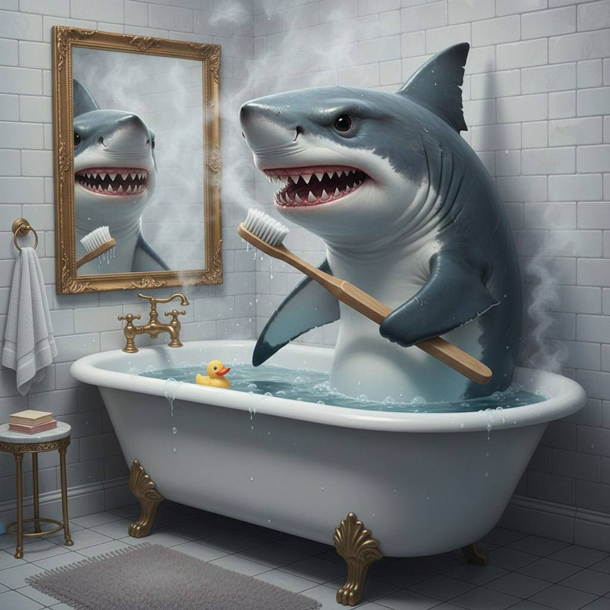
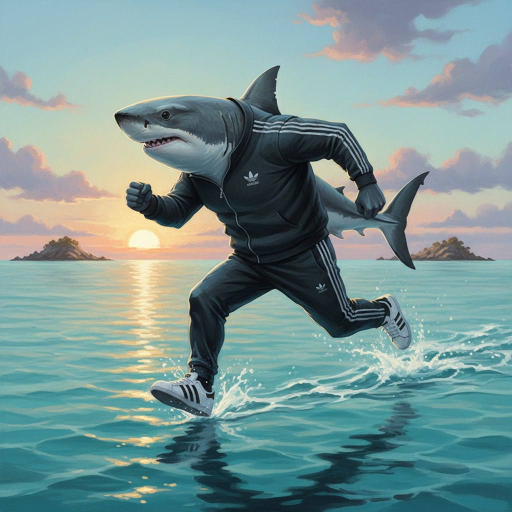
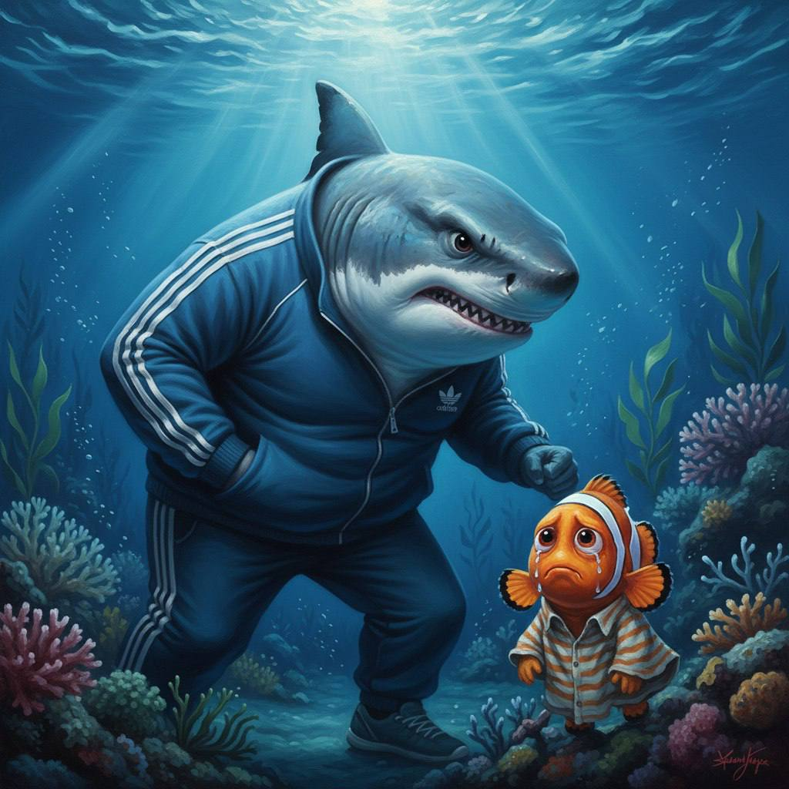
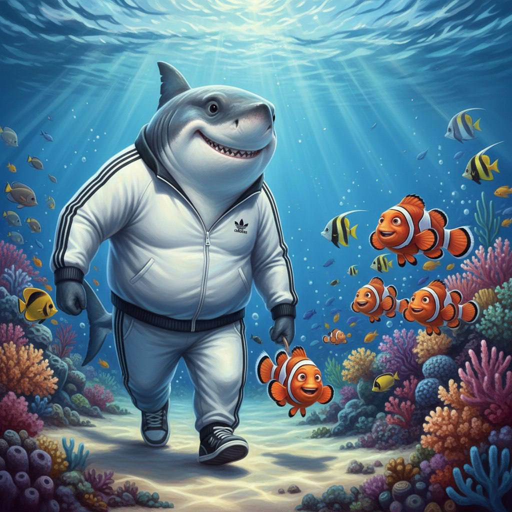

Сказка
Жила-была в большом синем океане весёлая акула по имени Бурмалда. Каждое утро ровно в семь часов она просыпалась и тщательно чистила свои острые зубки специальной пастой из морских водорослей.


После чистки зубов Бурмалда отправлялась на бодрую утреннюю пробежку вдоль яркого кораллового рифа. Она плыла быстро и уверенно, наслаждаясь свежей океанской водой.
Во время пробежки Бурмалда увидела маленькую рыбку-клоуна, которая потерялась и очень испугалась. «Не бойся меня! — улыбнулась Бурмалда. — Я не такая страшная, как кажусь. Давай я тебе помогу!»


Бурмалда включила свой супер-нюх, быстро нашла дорогу к семье рыбки и аккуратно проводила её домой. С тех пор они стали лучшими друзьями и вместе охраняли риф.
Даже если ты выглядишь грозно — главное быть добрым и помогать другим. Дружба важнее всего!